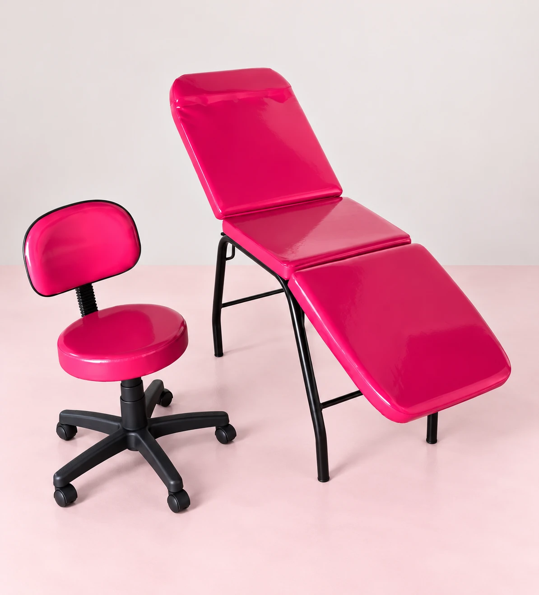
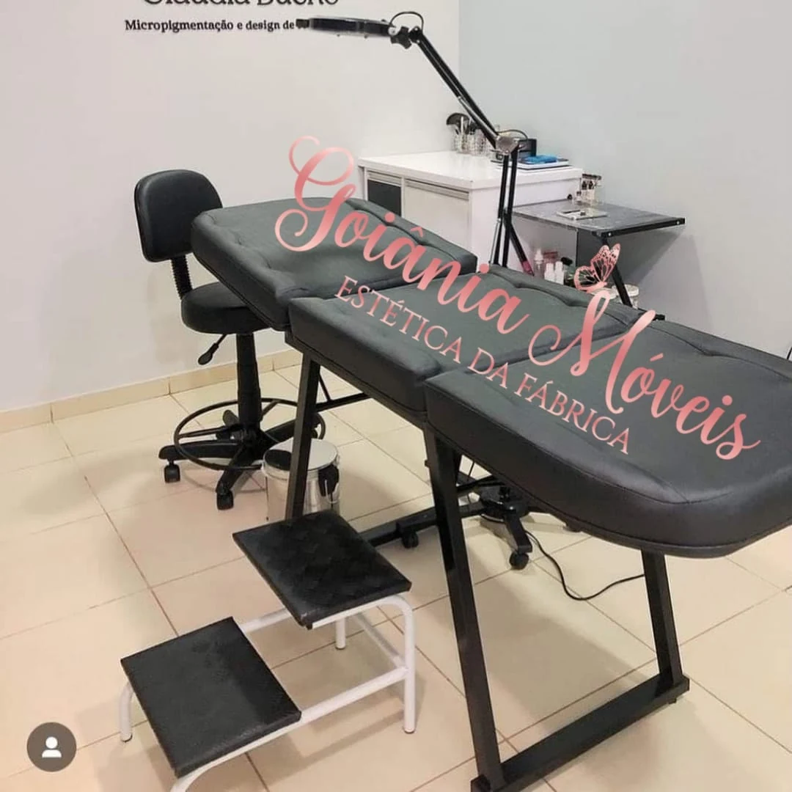
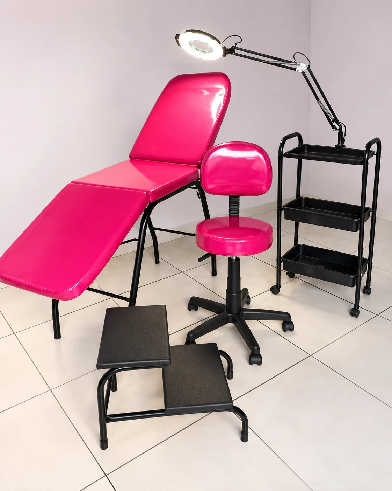

Ambientação com IA
Ambientação com IAPoltronas, macas e conjuntos
Um espaço
para cuidar.
Peça por peça.
Do encosto ao apoio para os pés, encontre uma referência para compor seu espaço de atendimento.
Ambientação com IAVer original
O atendimento começa
pelo espaço.
Referências publicadas no perfil:
escolha a peça que chamou sua atenção.
5 itens nesta seleção
Ambientação com IA


Ambientação com IA

Vista de detalhe

Vista do conjunto · Ambientação com IAAs imagens são referências publicadas. Consulte composição, medidas, materiais e condições atuais diretamente com o perfil. As ambientações com IA estão identificadas e têm acesso ao registro original.
Antes de escolher
Cabe no seu espaço.
Combina com
o seu atendimento.
Na poltrona rosa, o apoio para os pés ocupa espaço à frente. Na maca, observe também a área para o mocho, a escada e o carrinho.
Leve as medidas disponíveis e diga como pretende usar o ambiente. O perfil confirma os detalhes da peça com você.
Separar minha referênciaSua ideia, com os detalhes certos
Vamos escolher
uma referência?
Prepare uma mensagem com a peça e o espaço que você tem. Revise, copie e leve para a conversa no Instagram.
@goianiamoveisparasalaoAtendimento e confirmação de informações pelo perfil.
O próximo passo
é a conversa.
Uma peça de cada vez.
Com as suas medidas em mãos.